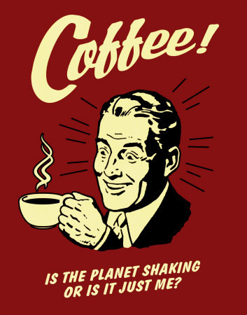

Scaling JavaScript Applications
The future of Wave front-end
Where we're heading
- CoffeeScript
- AMD
- Backbone.js
- 100% test coverage
Current Wave Accounting front-end
Spaghetti
- Looks good from the outside
- Tastes nice
- A mess to clean up
The issues
- Code quality
- Lack of structure and organization
- Lack of testing
Prevents us from...
- Creating great UX
- Innovating
- Proper maintenance
Agenda
- Part 1
- Primer on CoffeeScript and RequireJS
- Intro to Backbone.js
- Testing modules with Jasmine specs
- Part 2
- Wave Front-End 2.0
CoffeeScript
Main differences from JavaScript
- Significant whitespace
- Semicolons not required
- No braces
- No
varkeyword - Function declaration syntax
- Classes
- Comment syntax
Examples
# Assignment:
number = 42
# Functions:
square = (x) -> x * x
# Arrays:
list = [1, 2, 3, 4, 5]
# Objects:
math =
root: Math.sqrt
square: square
cube: (x) -> x * square x
OOP Example
class Animal
constructor: (@name) ->
move: (meters) ->
alert @name + " moved #{meters}m."
class Snake extends Animal
move: ->
alert "Slithering..."
super 5
class Horse extends Animal
move: ->
alert "Galloping..."
super 45
sam = new Snake "Sammy the Python"
tom = new Horse "Tommy the Palomino"
sam.move()
tom.move()JavaScript OOP equivalent
var Animal, Horse, Snake, sam, tom, __hasProp = {}.hasOwnProperty,
__extends = function(child, parent) { for (var key in parent) { if (__hasProp.call(parent, key)) child[key] = parent[key]; } function ctor() { this.constructor = child; } ctor.prototype = parent.prototype; child.prototype = new ctor(); child.__super__ = parent.prototype; return child; };
Animal = (function() {
function Animal(name) { this.name = name; }
Animal.prototype.move = function(meters) {
return alert(this.name + (" moved " + meters + "m."));
};
return Animal;
})();
Snake = (function(_super) {
__extends(Snake, _super);
function Snake() { return Snake.__super__.constructor.apply(this, arguments); }
Snake.prototype.move = function() {
alert("Slithering...");
return Snake.__super__.move.call(this, 5);
};
return Snake;
})(Animal);
Horse = (function(_super) {
__extends(Horse, _super);
function Horse() { return Horse.__super__.constructor.apply(this, arguments); }
Horse.prototype.move = function() {
alert("Galloping...");
return Horse.__super__.move.call(this, 45);
};
return Horse;
})(Animal);
sam = new Snake("Sammy the Python");
tom = new Horse("Tommy the Palomino");
sam.move();
tom.move();Modular JavaScript

What are modules?
- A module contains definitions of JavaScript functions and statements
- Highly decoupled, distinct pieces of functionality
How?
- Implement your own module system
- CommonJS>
- Use an AMD framework such as RequireJS
ECMAScript Harmony
AMD
Asynchronous Module Definition
- Mechanism for asynchronously defining loadable modules
- Non-blocking, parallel loading of modules
Why AMD?
- Well-defined modules and dependencies
- Directly supported in the browser (unlike CommonJS)
- Stepping stone to ES Harmony
RequireJS
- Supports nested and circular dependencies
- Optimizations available
- Asynchronous template loading
RequireJS: Defining and loading modules
### a.coffee
define (require, exports, module) ->
A =
foo: ->
exports = A
# b.coffee
define (require, exports, module) ->
A = require('a')
B =
bar: ->
A.foo()
exports = BExternal templates
define (require, exports, module) ->
_ = require('underscore')
TemplateText = require('text!template.html')
exports = _.template(TemplateText)
Backbone.js

Overview of Backbone
- Very lightweight
- Minimal dependencies: Underscore.js and jQuery/Zepto
- Uses MV* pattern
- Very close to Smalltalk-80's MVC pattern
MV* in Backbone
- Model
- Same as model in MVC
- View
- Similar to Controller in Smalltalk-80's MVC
- Takes in model and renders view
- Handles user interaction with view to update model
- Observes changes on model to update view
- Template
- Same as view in MVC
Backbone components
- Model
- Collection
- View
- Router
Model
- Extend from Backbone.Model
- Prototype chain is setup properly for you
var Animal = Backbone.Model.extend({
says: function() { return '?'; }
});
var Cat = Animal.extend({
says: function() { return 'meow'; }
});
var cat = new Cat();
cat instanceof Cat; //--> true
cat instanceof Animal; //--> true
cat.says(); //--> "meow"
cat.constructor.__super__.says.call(this); //--> '?'Inheritance in VanillaJS
var Animal = function() {};
Animal.prototype.says = function() { return '?'; };
var Cat = function() {};
Cat.prototype = new Animal();
Cat.prototype.constructor = Cat;
Cat.prototype.constructor.__super__ = Animal.prototype;
Cat.prototype.says = function() { return 'meow'; };
var cat = new Cat();
cat instanceof Cat; //--> true
cat instanceof Animal; //--> true
cat.says(); //--> "meow"
cat.constructor.__super__.says.call(cat); //--> '?'Collection
A collection is a collection of models
var MyModel = Backbone.Model.extend({ });
var MyModelCollection = Backbone.Collection.extend({
model: MyModel
});View and template
- View handles user interaction
- View handles updates to model or collection
- View updates UI based on changes to model or collection
- Template renders data as an UI element
View
- A view is often associated with a model or collection, but not always
- Uses templates in its
renderfunction to render its UI element
var MyView = Backbone.View.extend({
// Compiles Underscore template for later use
template: _.template('<p><%= message %></p>'),
render: function() {
// Render the Underscore template
$(this.el).html( this.template({ message: 'Hello World!'}) );
return this;
}
});
Template
Backbone does restrict your choices of templates.
You can use any templating language you want.
- Underscore template
- Mustache
- Handlebars
- jQuery template
- dust.js
Handlebars
- Extension of the Mustache templating language
- Supports limited logic in the templates layer
- Supports user-defined helper functions for generating HTML
Using templates in Backbone
Templates are used in the views to render data.
<!-- HTML -->
<div id="myDiv"></div>/* JavaScript */
var Person = Backbone.Model.extend({});
var PersonView = Backbone.View.extend({
template: Handlebars.compile('<p<Hello {{firstName}} {{lastName}}</p>'),
render: function() {
$(this.el).html( this.template(this.model.toJSON()) );
return this;
}
});
var john = new Person({ firstName: 'John', lastName: 'Smith' });
var view = new PersonView({
el: $('#myDiv'),
model: john
});Code reuse using mixins
A mixin defines attributes and functions that can be shared across different classes.
var Mixins = {};
Mixins.Navigation = {
open: function() { /* ... */ },
close: function() { /* ... */ },
toggle: function() { /* ... */ }
};
var Menu = Backbone.View.extend({ /* ... */ });
_.extend(Menu.prototype, Mixins.Navigation);
var menu = new Menu();
menu.toggle();THE END
by Jack Hsu/ jaysoo.ca